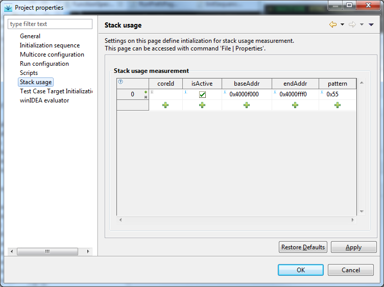
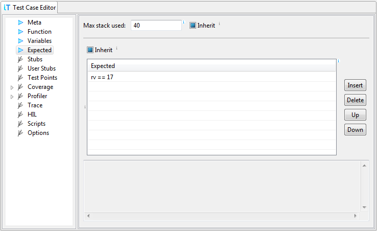

rv == 34*ptr == 42@R3 == 42`DigitalIn.DIN0 == 1
To measure stack usage, we must first configure stack addresses
and seeding pattern in testIDEA File | Properties | Stack
usage page:

Stack base address (baseAddr) is the lowest address we expect to be used for stack, and Stack end address (endAddr) is the last address - top of the stack, usually stack pointer is set to this value at target init.Seeding pattern is a byte value written to unused stack area. testIDEA reads stack memory area after test, and considers locations with other values to be used for stack during test.
Once we've configured stack measurements, we can specify the maximum allowed amount of stack used for each test:

Test reports contain also amounts of stack used before the test started, amount used by testIDEA for test local variables, and the actual amount used by application code under test.
Limitations
Seeding pattern
Since the pattern used for stack initialization can occur
also in normal program execution, this approach may not be 100%
accurate in all cases. However, probability that it will give
wrong results for more than few bytes is very small, and depends
also on selection of seeding pattern in File | Properties |
Stack usage. It is recommended to use a pattern, which can
not be valid address. For example, if our target has no memory or
other addressable items at 0xCCCCCCCC, then 0xCC is a good choice.
Stack overflow
testIDEA can measure stack usage under normal conditions, when there is still some space on the stack left. Stack overflows will not be detected. This is normally not a problem for unit tests, as single function usually uses much less space than there is used during normal application run.
Recursion
Stack usage in case of recursion heavily depends on values of input parameters, so successful tests of recursive functions do not guarantee limited stack usage.